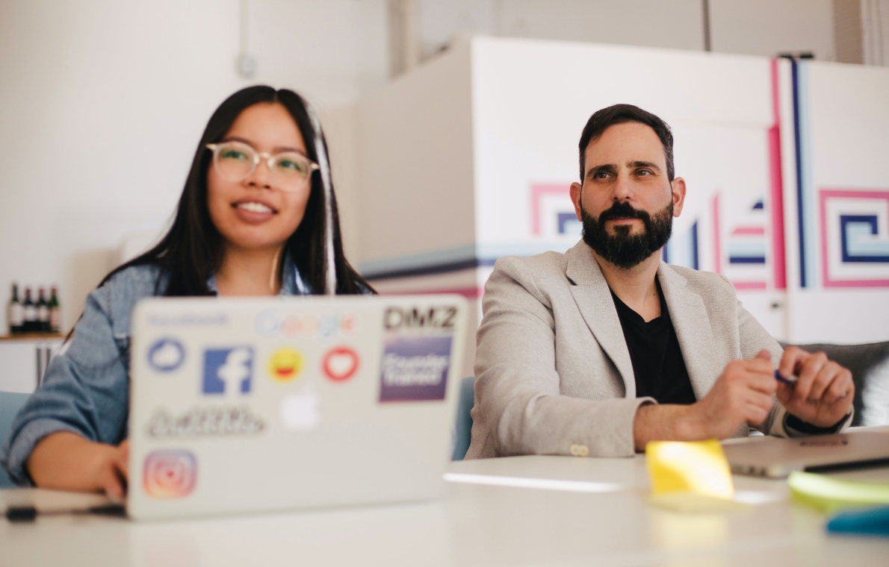

<section class="news-page story-p">
  <div class="insights-main-bg">

    <div class="breadcrumbs wrapper">
      <ul class="breadcrumbs__list">
        <li class="breadcrumbs__item">
          <a class="breadcrumbs__link" href="./main.html">Главная</a>
        </li>
        <li class="breadcrumbs__item">
          <a class="breadcrumbs__link" href="#">Новости</a>
        </li>
      </ul>
    </div>


    

    <div class="wrapper">
      <div class="insights-subtitle">Story</div>
      <h1 class="insights-title">SBI Bank: данные клиентов защищены ISOC</h1>
    </div>
  </div>

  <div class="sticky-wrapper pb15">
    <div class="sticky-wrapper__block wrapper">
      <div class="avatar-block sticky">
        <a href="#" class="block__story-p">
          <p class="block__story-p_title">Услуги</p>
          <p class="block__story-p_text">Решения Microsoft, управление ресурсами программного обеспечения (SAM),
            разработка ИТ-стратегии</p>
        </a>
        <a href="#" class="block__story-p">
          <p class="block__story-p_title">Продавцы</p>
          <p class="block__story-p_text">Microsoft</p>
        </a>
      </div>
    </div>

    <div class="line"></div>

    <div class="sticky-wrappper__block center-block story-block">
      <h2>
        SBI Bank завершил подключение к Центру мониторинга событий информационной безопасности ISOC компании
        Infosecurity (входит в группу компаний Softline). Существующая система мониторинга банка была дополнена
        модулями автоматизированного реагирования, которые исключают риски хищения данных и денег, а также выявляют и
        предотвращают кибератаки на ранних стадиях
      </h2>

      <p>
        Внедрение новой технологии защиты данных связано с расширением клиентской базы при создании банком
        интегрированного продукта для домохозяйств, объединяющего все необходимые услуги по управлению семейным
        бюджетом, и экосистемы для предпринимателей.
      </p>

      <div class="quote">
        <div class="quote__wrapper">
          <div class="quote__text man36">Мы выводим на рынок ряд удобных и клиентоориентированных сервисов: мобильный
            банкинг, благодаря которому люди могут консолидировать счета всей семьи, анализировать общие траты,
            обучать детей финансовой грамотности и применять платежные решения</div>
          <div class="quote__author-block">
            <div class="img-wrapper round"></div>
            <div class="quote__author-name">
              Андрей Карякин,
              <br />председатель правления SBI Bank
            </div>
          </div>
        </div>
      </div>


      <figure>
        

        <figcaption>Компания Softline предложила заказчику стандартный пакет услуг, полностью
          удовлетворяющий текущие потребности в мониторинге ИТ-систем по оптимальной цене.</figcaption>
      </figure>

      <h2>Критерии выбора новой системы</h2>

      <p>
        Критерии - обеспечить скорость, технологичность и безопасность без ущерба для производительности и качества
        бизнес-процессов банка. Сотрудничество основано на модели SOC как услуги, которая позволяет ВОО Банку избежать
        затрат на дорогостоящее оборудование и высококвалифицированный персонал, обеспечивая при этом всестороннюю
        профессиональную защиту.
      </p>

      <blockquote>Реализация всего проекта, от момента первоначального обсуждения до сдачи под ключ,
        которая заняла у проектной команды Softline 14 дней, включала три основных этапа: подготовка, внедрение
        решения и разработка эксплуатационной документации. Сложность подхода к решению поставленных задач является
        одним из ключевых показателей качества работ, выполняемых Softline</blockquote>

      <p>После подготовительного этапа специалисты Softline предложили проект по внедрению программного
        пакета
        <a href="#">SafeNet Authentication Manager от Aladdin R.D</a>
      </p>


      <figure>

          

        <figcaption>Компания Softline предложила заказчику стандартный пакет услуг, полностью
          удовлетворяющий текущие потребности в мониторинге ИТ-систем по оптимальной цене.</figcaption>
      </figure>


        <h2>Задачи, которые мы решали по проекту</h2>

        <ol>
          <li>
            <h3>Сокращение затрат на обслуживание информационных систем</h3>
            <p>Автоматизация типовых операций, позволяющая снизить совокупную
              стоимость владения информационной системой (TCO) и увеличить окупаемость инвестиций (ROI)</p>
          </li>
          <li>
            <h3>Повышение уровня безопасности</h3>
            <p>Управляемость ИТ-системами предприятия, а также перевод
              административного контроля и аудита на качественно новый уровень</p>
          </li>
          <li>
            <h3>Упрощение внедрения и управления</h3>
            <p>Жизненный цикл смарт-карт и USB-ключей на всех этапах
              использования, включая проблемы с запасами</p>
          </li>
          <li>
            <h3>Информационная среда Orange Business Services</h3>
            <p>Выполнена миграция с системы управления маркерами на
              обновленные клиентские модули SafeNet Authentication Manager</p>
          </li>
        </ol>

        <ul>
          <li>Прикладные средства виртуализации - гипервизоры</li>
          <li>Наличие сертификатов ФЗ-152, PCI DSS 3.2, ISO 27001</li>
          <li>Количество, статус и уровень надежности центров обработки данных, на основе которых строится облако</li>
          <li>Доступность услуг для миграции в облако, настройки и окончательной доработки программного обеспечения</li>
          <li>Количество инженеров в штате облачного отдела</li>
          <li>Заявленный уровень надежности</li>
          <li>Стоимость облачной инфраструктуры</li>
        </ul>

      <section class="wrapper informationTechnology career">
        <div class="informationTechnology__content informationTechnology__content_position">
          <div class="informationTechnology__block">
            <div class="informationTechnology__helper">
              <div>
                2
              </div>

              <div>
                месяцев работы
              </div>
            </div>

            <div>
              выполнил работу на месяц быстрее
            </div>
          </div>

          <div class="informationTechnology__block">
            <div class="informationTechnology__helper">
              <div>
                1500
              </div>

              <div>
                компьютеры в парке
              </div>
            </div>

            <div>
              автоматизирована для контроля и контроля
            </div>
          </div>

          <div class="informationTechnology__block">
            <div class="informationTechnology__helper">
              <div>
                24/7
              </div>

              <div>
                сотрудничество
              </div>
            </div>

            <div>
              техническая поддержка целостности системы
            </div>
          </div>

        </div>
      </section>

      <div class="text-wrapper bottom">

        <div class="press-contacts">
            <p>В настоящее время идет процесс дальнейшего развертывания системы в других офисах компании и перевода ее
              компонентов в эксплуатацию специалистами ОАО "ОУК" Южкузбассуголь "при консультационной поддержке Softline
              Consulting Services</p>
          {{> tag-wrapper}}
        </div>

      </div>

    </div>

    <div class="sticky-wrappper__block right-block wrapper">
      <div class="sticky">
        {{> links}}
      </div>
    </div>

  </div>

  <section class="story-p__solve">
    <div class="solve__intro" style="background-image: url(assets/images/stories/solve.jpg);">
      <div class="section-top vertical white">
        <div class="title-wrapper">
          <h2 class="title">См. также аналогичные решения в этой отрасли</h2>
          <a class="link-white" href="#">
            <svg viewBox="0 0 32 32" fill="none" xmlns="http://www.w3.org/2000/svg">
              <rect width="32" height="32" rx="16" fill="white" />
              <path d="M21.8857 16.4L15.6954 22.8M21.8857 16.4L10 16.3997M21.8857 16.4L15.6954 10" stroke="#212424"
                stroke-width="1.5" />
            </svg>
            <span>Все истории</span>
          </a>
        </div>
      </div>
    </div>
    <div class="solve__slider">
      <div class="solve-p__container swiper-container">
        <div class="swiper-wrapper">
          <div class="swiper-slide">
            <div class="solve__swiper-top">
              
              <h3 class="subtitle">Olympus переключился на интеллектуальное управление печатью документов</h3>
            </div>
            <p class="footnote">Техническая поддержка и аутсорсинг</p>
          </div>
          <div class="swiper-slide">
            <div class="solve__swiper-top">
              
              <h3 class="subtitle">Реализация проектов на основе искусственного интеллекта</h3>
            </div>
            <p class="footnote">Решения Microsoft, техническая поддержка и аутсорсинг</p>
          </div>
          <div class="swiper-slide">
            <div class="solve__swiper-top">
              
              <h3 class="subtitle">Реализация проектов на основе искусственного интеллекта</h3>
            </div>
            <p class="footnote">Техническая поддержка и аутсорсинг</p>
          </div>
          <div class="swiper-slide">
            <div class="solve__swiper-top">
              
              <h3 class="subtitle">Корпоративная трансформация в решение Microsoft для малайзийских автомобилей</h3>
            </div>
            <p class="footnote">Решения Microsoft, управление ресурсами программного обеспечения (SAM), разработка
              ИТ-стратегии</p>
          </div>
          <div class="swiper-slide">
            <div class="solve__swiper-top">
              
              <h3 class="subtitle">Реализация проектов на основе искусственного интеллекта</h3>
            </div>
            <p class="footnote">Техническая поддержка и аутсорсинг</p>
          </div>
        </div>
        <div class="swiper-button-prev"></div>
        <div class="swiper-button-next"></div>
      </div>
    </div>
  </section>


  {{> subscribe-block}}

  <section class="wrapper BCG">
    <h2 class="title">Познакомьте свою компанию&nbsp;<br>с рядом услуг</h2>

    <div class="swiper-container range-slider">
      <div class="services-range swiper-wrapper">
        <a href="#" class="service-range swiper-slide">
          <span class="service-range__inner">
            <span class="service-range__top">
              <span class="service-range__top_img">
                
              </span>
              <span class="subtitle">Политика качества</span>
            </span>
            <span class="service-range__bottom">Если у вашей компании нет собственного оборудования, мы передадим его
              вам в аренду</span>
          </span>
        </a>
        <a href="#" class="service-range swiper-slide">
          <span class="service-range__inner">
            <span class="service-range__top">
              <span class="service-range__top_img">
                
              </span>
              <span class="subtitle">Облачные сервисы для бизнеса</span>
            </span>
            <span class="service-range__bottom">Softline предлагает широкий спектр облачных услуг для бизнеса</span>
          </span>
        </a>
        <a href="#" class="service-range swiper-slide">
          <span class="service-range__inner">
            <span class="service-range__top">
              <span class="service-range__top_img">
                
              </span>
              <span class="subtitle">Управление арендой виртуальных ресурсов</span>
            </span>
            <span class="service-range__bottom">Масштабируемая услуга аренды вычислительной мощности с самоуправляемыми
              серверами</span>
          </span>
        </a>
        <a href="#" class="service-range swiper-slide">
          <span class="service-range__inner">
            <span class="service-range__top">
              <span class="service-range__top_img">
                
              </span>
              <span class="subtitle">Безопасность веб-служб</span>
            </span>
            <span class="service-range__bottom">Средства WSS, способные обнаруживать и блокировать атаки на
              веб-ресурсы</span>
          </span>
        </a>
      </div>
    </div>
  </section>

</section>

{{> cookie-modal}}